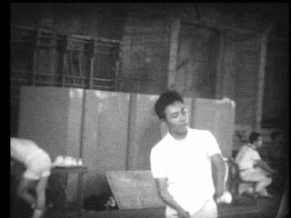
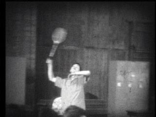
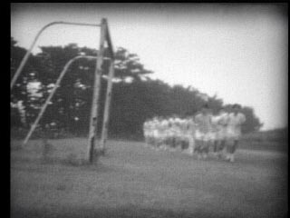
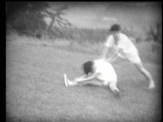
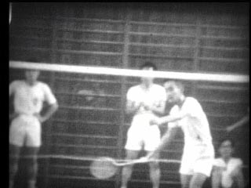
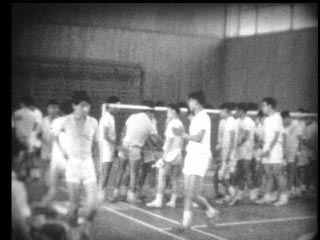
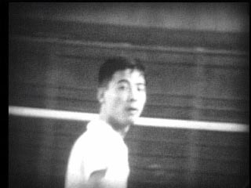
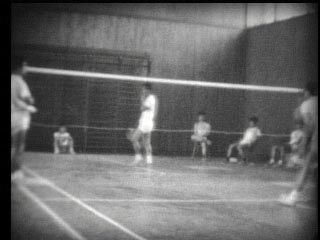
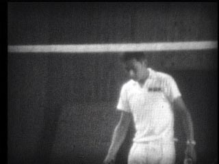
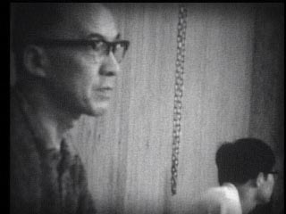

|  |  |  |  |
|
1965年6月 国公立戦@東工大体育館 試合風景 井上 (7sec) |
1965年6月 国公立戦@東工大体育館 羽根打ち 金丸 (5sec) |
1965年7月17日 京大戦@検見川 朝のランニング (11sec) |
1965年7月17日 京大戦@検見川 朝の体操 (5sec) |
|  |  |  |  |
|
1965年7月17日 京大戦@検見川体育館 木下(東大) 対 黒田 兄(京大) (9sec) |
1965年7月17日 京大戦@検見川体育館 京大戦勝利 (17sec) |
1965年7月17日 京大戦@検見川体育館 森本(東大) 対 稲垣(京大) (12sec) |
1965年7月17日 京大戦@検見川体育館 横山(東大) 対 中山(京大) (13sec) |
|  |  | ||
|
1965年7月17日 京大戦@検見川体育館 試合風景 木村・平松 (13sec) |
1965年7月17日 京大戦@検見川体育館 応援風景 横山さん父上 (13sec) |